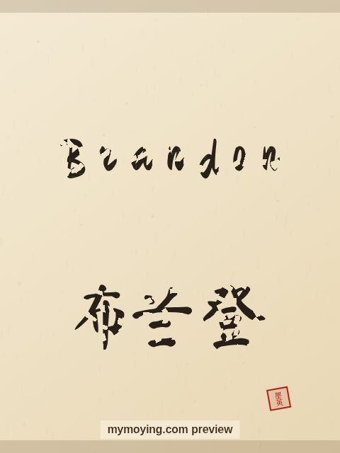

Brandon in Chinese Calligraphy
A look at Brandon in brush style, with the Chinese transliteration 布兰登 (Bù lán dēng) and the meaning of the name.

Sample. “Brandon” in the Regular (楷书) brush style with the Chinese name 布兰登 (Bù lán dēng). The paid file removes the watermark.
The Chinese characters for Brandon
As a transliteration, Brandon is usually written 布兰登 (Bù lán dēng). Each character is listed below with its own dictionary meaning — the name is chosen by sound, not by meaning, and Moying does not translate names. Please have a person review the characters before any permanent use such as a tattoo.
Origin and meaning
From English, Brandon carries the meaning “broom hill, or prince (from Brandon)”.
About the name Brandon
A surname-turned-first-name that was a top pick in the 1980s and 1990s.
As a gift or a tattoo
People often order Brandon as a framed gift or as a tattoo — the meaning, “broom hill, or prince (from Brandon)”, is part of the appeal.
Open Brandon in the generatorFree watermarked preview. $1.99 once for a clean high-resolution download of this name in every style and setting. No subscription. Digital product, delivered instantly; see Terms.